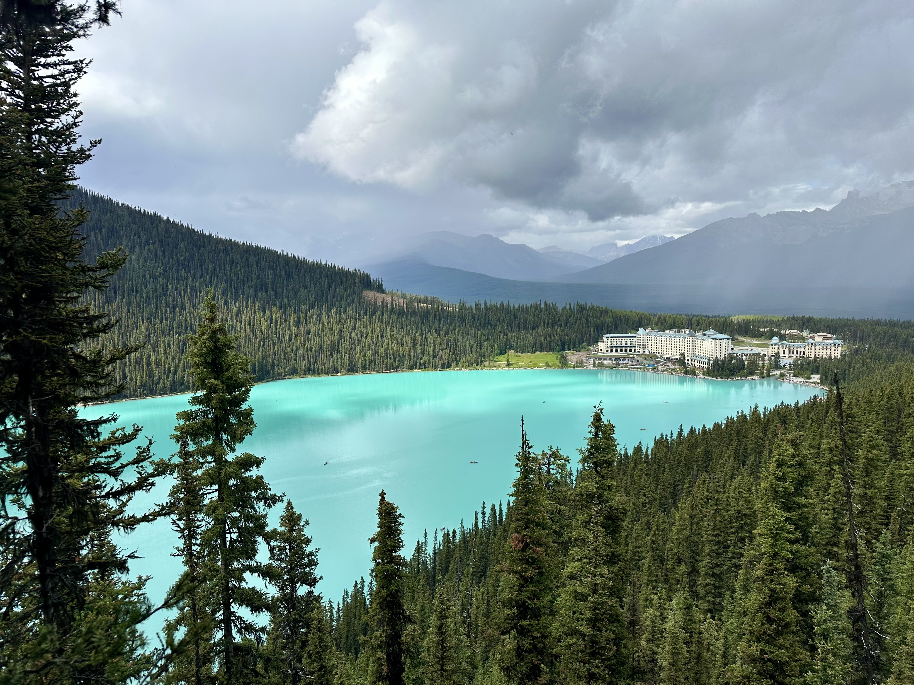
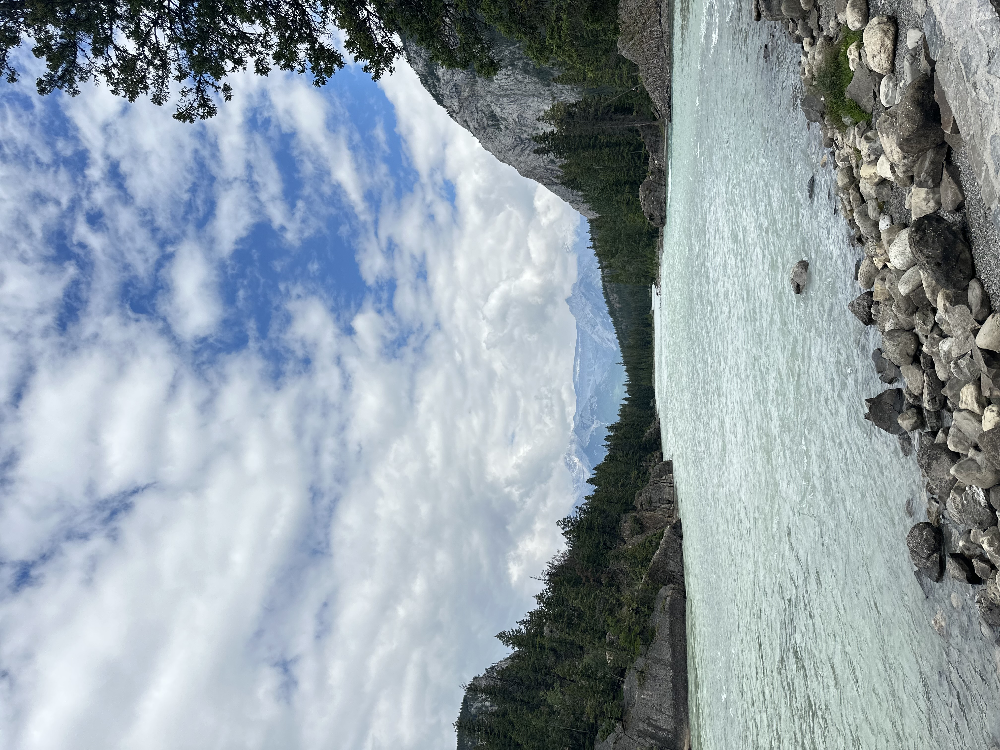

Banff, Canada: A Mini Guide

Visiting Banff has always been on my bucket list!
I got to visit this summer and it was as beautiful as it looks online.
Here is a mini guide on visiting Banff!
- 


Visiting Banff is an unforgettable experience, but a little planning goes a long way. If you want to see Lake Louise, be sure to book your shuttle at least two days in advance since spots fill up
quickly. The weather can be unpredictable, so dress in layers—some areas stay chilly while hiking will warm you up fast.
Always carry bear spray, as wildlife encounters are a real possibility, and don’t forget to purchase your Banff National Park pass before heading out.
With preparation, you’ll be ready to enjoy the stunning scenery, crisp mountain air, and world-class trails.
Click here to start planning your dream getaway!
Things to Do in Banff